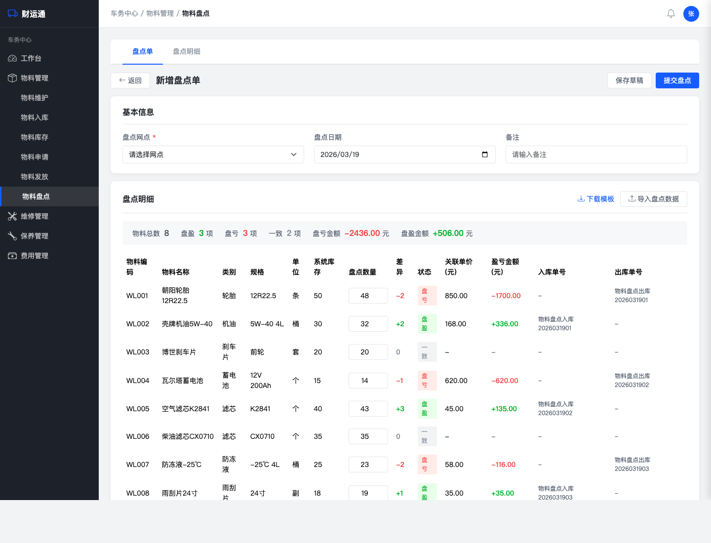
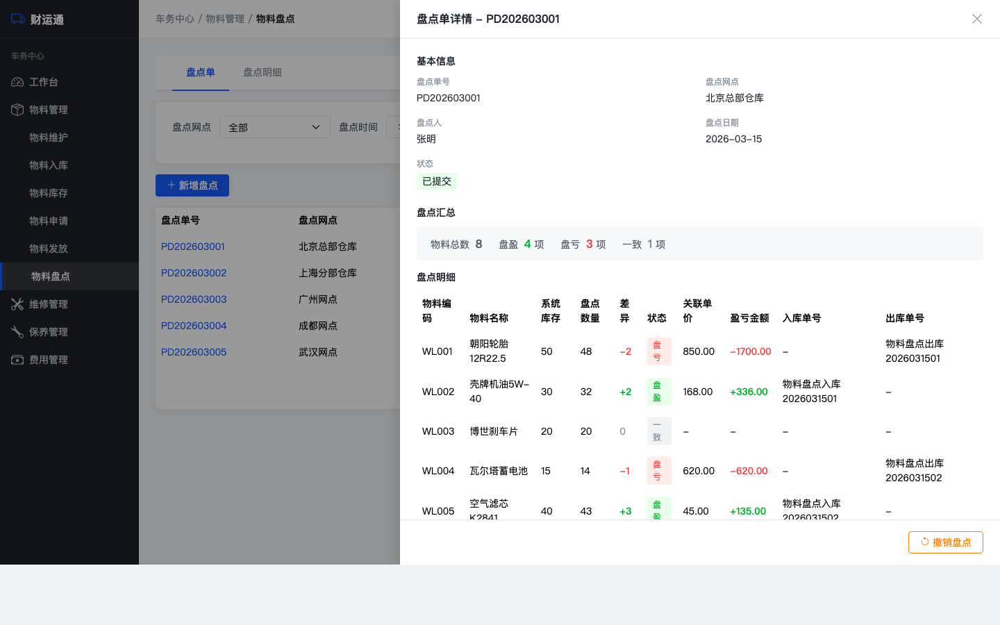
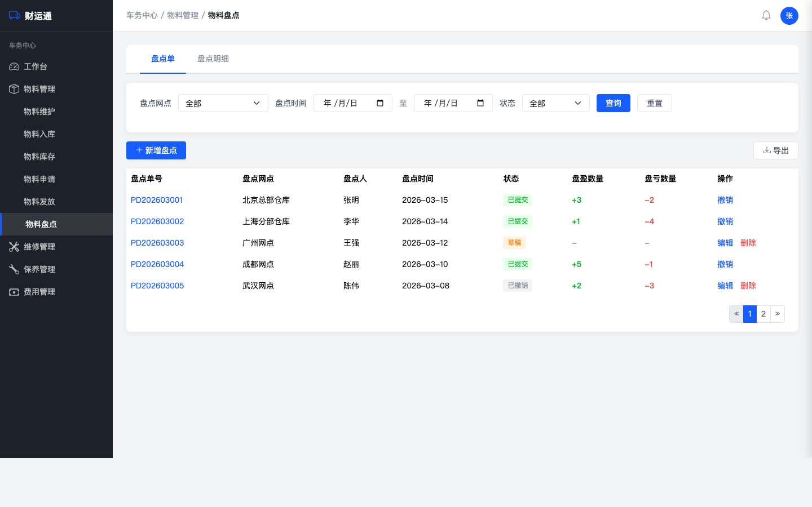
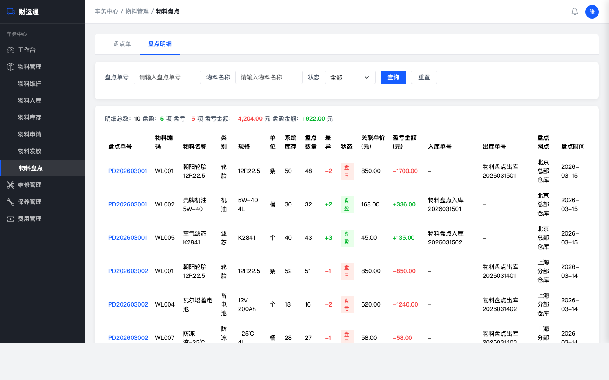

| 项目 | 内容 |
|---|---|
| 文档版本 | v1.0 |
| 创建日期 | 2026-03-19 |
| 状态 | 草稿 |
| 所属系统 | 财运通-车务中心 |
| 所属模块 | 物料管理-库存管理 |
| 文档作者 | 产品团队 |
| 最后更新 | 2026-03-19 |
物料在实际使用过程中会出现丢失、破损、计量误差等情况，导致系统记录的可用库存与仓库实际数量产生偏差。目前系统缺乏库存修正机制，无法准确反映真实库存状态，影响物料申请、发放决策，也无法支撑财务核算物料损耗和资产盘亏/盘盈。
包含（In Scope）：
不包含（Out of Scope）：
| 术语 | 定义 |
|---|---|
| 盘点 | 对仓库物料进行实物清点，核对系统库存与实际库存的一致性 |
| 盘盈 | 实际盘点数量 > 系统库存数量，物料实际多于系统记录 |
| 盘亏 | 实际盘点数量 < 系统库存数量，物料实际少于系统记录 |
| FIFO | First In First Out，先进先出原则，盘亏扣减时从最早的入库单开始扣减 |
| 盘点入库单 | 盘盈时系统自动生成的入库单，来源标记为「盘点」 |
| 盘点出库单 | 盘亏时系统自动生成的出库记录 |
| 角色 | 描述 | 核心诉求 |
|---|---|---|
| 仓管员 | 负责仓库物料的日常管理和盘点操作 | 快速录入盘点数量，系统自动算差异和金额 |
| 车队管理员 | 管理各网点车队运营，关注物料损耗 | 查看各网点盘点结果，掌握损耗情况 |
| 财务人员 | 负责物料费用核算 | 获取盘盈/盘亏金额数据，导出报表 |
| # | 用户故事 | 优先级 | 故事点 |
|---|---|---|---|
| S1 | 仓管员选择网点创建盘点单，系统自动带出物料及库存 | P0 | 5 |
| S2 | 仓管员逐项录入盘点数量，系统自动计算差异 | P0 | 3 |
| S3 | 仓管员通过Excel批量导入盘点结果 | P1 | 5 |
| S4 | 提交盘点单时校验库存、关联入库单、计算金额 | P0 | 8 |
| S5 | 查看盘点单列表，按网点/时间/状态筛选 | P1 | 3 |
| S6 | 财务人员导出盘点差异报表 | P2 | 2 |
| S7 | 车队管理员查看盘点操作日志 | P2 | 2 |
| S8 | 撤销已提交的盘点单，库存和入库单联动恢复 | P0 | 8 |
| S9 | 重新编辑已撤销的盘点单并再次提交 | P1 | 3 |
完整用户故事详见：Owned fleet/物料管理/物料盘点-用户故事.md
| 编号 | 功能名称 | 优先级 | 描述 |
|---|---|---|---|
| F001 | 创建盘点单 | P0 | 选择网点，自动加载物料及库存 |
| F002 | 录入盘点数量 | P0 | 逐项填写盘点数量，自动计算差异/金额/单号 |
| F003 | 提交盘点单 | P0 | 校验库存、关联入库单(FIFO)、生成出入库单、更新库存 |
| F004 | 撤销盘点单 | P0 | 恢复库存、恢复/作废关联的出入库单 |
| F005 | 重新编辑 | P1 | 已撤销的盘点单可重新编辑提交 |
| F006 | 盘点单列表 | P1 | 列表展示、筛选、盘点单号链接查看详情 |
| F007 | 盘点明细汇总 | P1 | 跨盘点单的全部明细汇总查看 |
| F008 | 批量导入 | P1 | Excel导入盘点数据 |
| F009 | 导出报表 | P2 | 导出盘点差异报表 |
| F010 | 操作日志 | P2 | 记录盘点相关的库存调整日志 |
交互说明：详见原型文件

物料盘点入库+YYYYMMDD+两位序号物料盘点出库+YYYYMMDD+两位序号交互说明：详见原型文件
提交前校验：
提交确认弹窗：
提交执行（同一事务）：
业务规则：
交互说明：详见原型文件
撤销确认弹窗：
撤销执行（同一事务）：
业务规则：
交互说明：详见原型文件

交互说明：详见原型文件
原型截图：

交互说明：详见原型文件

交互说明：详见原型文件
交互说明：详见原型文件
交互说明：详见原型文件
| 类型 | 格式 | 示例 |
|---|---|---|
| 盘点入库单 | 物料盘点入库+YYYYMMDD+两位序号 | 物料盘点入库2026031501 |
| 盘点出库单 | 物料盘点出库+YYYYMMDD+两位序号 | 物料盘点出库2026031501 |
| 状态 | 可执行操作 |
|---|---|
| 草稿 | 编辑、删除、提交 |
| 已提交 | 查看、撤销 |
| 已撤销 | 编辑（重新提交）、删除 |
| 权限项 | 说明 |
|---|---|
| 功能权限 | 仅拥有「物料盘点」功能权限的用户可见和操作 |
| 网点权限 | 用户只能对本级网点或下级网点发起盘点 |
原型文件：Owned fleet/物料管理/prototypes/物料盘点/index.html
主要交互：
原型截图：
盘点单列表页面，展示所有盘点单的汇总信息，支持筛选和查看详情。
创建/编辑盘点单页面，包含盘点明细表格和顶部汇总条，支持录入盘点数量并实时计算差异。
盘点明细Tab页面，跨盘点单汇总展示所有盘点明细记录。
盘点详情抽屉弹窗，从右侧滑入，展示盘点单的完整信息，支持撤销操作。
| 字段名 | 类型 | 必填 | 说明 |
|---|---|---|---|
| id | bigint | 是 | 主键 |
| order_no | varchar(20) | 是 | 盘点单号，格式 PD+YYYYMM+序号 |
| site_id | bigint | 是 | 盘点网点ID |
| site_name | varchar(100) | 是 | 盘点网点名称 |
| check_date | date | 是 | 盘点日期 |
| check_user_id | bigint | 是 | 盘点人ID |
| check_user_name | varchar(50) | 是 | 盘点人姓名 |
| status | tinyint | 是 | 状态：0草稿/1已提交/2已撤销 |
| remark | varchar(500) | 否 | 备注 |
| created_at | datetime | 是 | 创建时间 |
| updated_at | datetime | 是 | 更新时间 |
| 字段名 | 类型 | 必填 | 说明 |
|---|---|---|---|
| id | bigint | 是 | 主键 |
| order_id | bigint | 是 | 关联盘点单ID |
| material_code | varchar(20) | 是 | 物料编码 |
| material_name | varchar(100) | 是 | 物料名称 |
| category | varchar(50) | 是 | 物料类别 |
| spec | varchar(100) | 否 | 规格 |
| unit | varchar(20) | 是 | 单位 |
| system_stock | int | 是 | 盘点时系统库存（快照） |
| check_count | int | 否 | 实际盘点数量 |
| diff | int | 否 | 差异（check_count - system_stock） |
| status | tinyint | 否 | 0一致/1盘盈/2盘亏 |
| unit_price | decimal(10,2) | 否 | 关联单价 |
| amount | decimal(12,2) | 否 | 盈亏金额 |
| in_order_no | varchar(30) | 否 | 盘点入库单号（盘盈时） |
| out_order_no | varchar(30) | 否 | 盘点出库单号（盘亏时） |
| 字段名 | 类型 | 必填 | 说明 |
|---|---|---|---|
| id | bigint | 是 | 主键 |
| check_detail_id | bigint | 是 | 关联盘点明细ID |
| in_stock_id | bigint | 是 | 关联入库单ID |
| deduct_count | int | 是 | 扣减数量 |
| unit_price | decimal(10,2) | 是 | 该入库单的单价 |
用于撤销时精确恢复入库单余量。
本PRD为功能级需求文档，详细接口设计将在技术设计阶段完成。主要接口包括：
| 文档 | 路径 |
|---|---|
| 需求分析报告 | Owned fleet/物料管理/物料盘点-需求分析.md |
| 用户故事 | Owned fleet/物料管理/物料盘点-用户故事.md |
| 原型文件 | Owned fleet/物料管理/prototypes/物料盘点/index.html |
| 物料管理知识库 | knowledge-base/物料管理/物料管理知识.html |
完整交互原型请打开以下文件在浏览器中体验：
Owned fleet/物料管理/prototypes/物料盘点/index.html
原型截图：
prototypes/物料盘点/screenshots/01-盘点单列表.png| 版本 | 日期 | 修改内容 |
|---|---|---|
| v1.0 | 2026-03-19 | 初始版本 |
| 问题 | 提出人 | 提出日期 | 回答 | 回答人 | 回答日期 |
|---|---|---|---|---|---|
| 待填写 | |||||